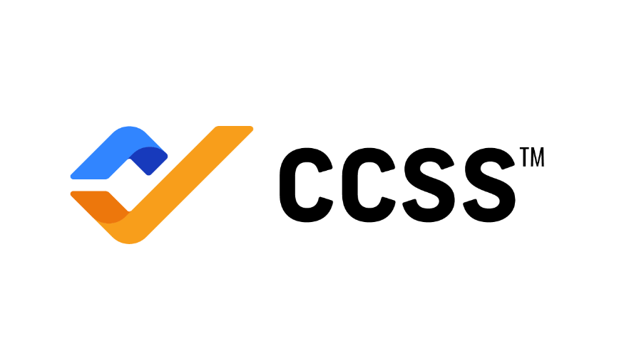
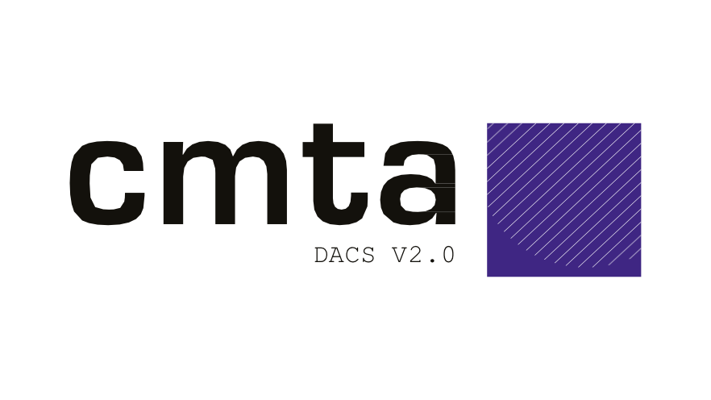

The visual system for Digital Custody Academy. It runs on the same system as enigma.sh, Sanctum and Sigil: light by default, ink leads, neutrals carry, one accent highlights. Only the colours change. ETS ink becomes Deep Navy and volt becomes Custody Blue.
DCA teaches the teams who hold other people's keys: board members, compliance officers, security engineers and custody operators. The curriculum is aligned to CCSS, CMTA DACS and NIST CSF, and each module ends in a credential the learner signs with their own UAE PASS signature.
Tagline
Secure. Verified. Professional.
Descriptor
Professional Education in Digital Asset Security
Endorsement
An Enigma Technologies Solutions initiative
Delivery
Modules ship as Sanctum apps from the DCA registry
Voice · do
Plain, precise, standards-literate. Name the framework, the control, the role.
Say who a module is for ("For compliance officers and operations leads").
Short declaratives. "Learn at your own pace."
Voice · don't
Hype, price talk or crypto slang.
Fear-selling about hacks and losses.
Unverifiable claims about credentials or accreditation.
Em dashes. Use a colon, a comma, a middot or a new sentence.
02 · Logo
the dca tile
The tile is drawn the same way as the ETS product tiles: white letters on a square, a Custody Blue frame inset, and a blue square on the baseline after the last letter. It replaces the v1 slab-mono PNG tiles. The square after "DCA" is the same device as the full stop on every section headline.
DCAPrimary · navy tile
DCAReversed · on Academy Navy
DCAGhost · placeholders, empty states
DCADigital Custody Academyan initiative of ETSEndorsed lockup · light
DCADigital Custody Academyan initiative of ETSEndorsed lockup · navy
Square 1:1, corners sharp. Never rounded, never a circle, never 3:2 (3:2 belongs to the ETS badge).
Frame: a 4 px navy gap, then a 2 px Custody Blue line, at 48 px. Scale both with the tile.
"DCA" in Poppins 700, cap height about 20% of the tile, letter-spacing -0.02em.
The blue square is 0.2em, sitting on the baseline 0.07em after the "A".
Minimum size: 32 px on screen, 10 mm in print. Clear space: ¼ of the tile on every side.
Rules
Don't put the navy tile on Academy Navy. Use the reversed tile.
Don't fill the tile with Custody Blue or add a gradient.
Don't drop the ETS endorsement from full lockups on marketing surfaces.
Don't use ETS volt on DCA surfaces. The ETS badge appears in black or outline only.
Source: public/dca-tile.svg, drawn from Poppins 700 outlines by scripts/gen-tile.py. The favicons, app icons and dca-logo.png are rendered from it.
03 · Color
navy leads, blue highlights
Same structure as the ETS tokens, same names. Deep Navy is the ink, cool neutrals carry the page, Academy Navy builds the brand surfaces and Custody Blue is the single highlight. Click a swatch to copy its hex.
Brand
Neutrals
Rough distribution on a page: 80% white and mist · 16% navy (ink, tile, one band) · 4% Custody Blue. This inverts v1, where navy covered most of the page.
Contrast
Pair
Sample
Ratio
WCAG
Use for
Deep Navy on White
Aa custody
14.84
AAA
Headlines, body ink
Ink 2 on White
Aa custody
8.80
AAA
Body copy, ledes
Ink 3 on White
Aa custody
5.38
AA
Captions, labels
Ink 3 on Mist
Aa custody
4.97
AA
Captions on alternate sections
Signal Navy on White
Aa custody
6.82
AA
Links, --accent-fg on light
Deep Navy on Custody Blue
Start module
4.51
AA
Accent buttons, step numbers
White on Custody Blue
Start module
3.29
Fails body
Never
Custody Blue on White
Aa custody
3.29
Fails body
Never as text. Fills and squares only.
White on Academy Navy
Aa custody
11.27
AAA
Bands, course heads
#C5D0E0 on Academy Navy
Aa custody
7.23
AAA
Secondary text on navy
Custody Blue on dark --bg
Aa custody
5.29
AA
--accent-fg on dark
Ink 3 on dark --bg
Aa custody
4.72
AA
Captions on dark
The one-line rule, same as ETS volt: Custody Blue is a fill, never text on white. Foreground accents go through --accent-fg: Signal Navy on light, Custody Blue on dark. Anything filled with Custody Blue takes Deep Navy text.
ETS to DCA
Token
ETS (enigma.sh, Sanctum, Sigil)
DCA
--ink
#0A0A09
#0F2847
--bg-2 / --card-2
#F7F7F4 / #F2F2EE (warm)
#F4F6F9 / #EEF2F7 (cool)
--volt → --accent
#FBFF00
#5B8FD9
--volt-ink → --accent-ink
#0A0A09
#0F2847
--accent-fg (light)
var(--ink)
#2C5AA0
--navy
n/a
#1B3A6B
Type, radii, rhythm, components
Shared
Unchanged
04 · Typography
poppins × inter
The ETS product stack. Poppins sets display, Inter sets UI and body, Space Mono is limited to data, code and labels. The v1 rule of Space Mono for body copy is retired: long lessons read better in Inter.
HeroPoppins 800 · -0.04em · 0.96
digital custody
Section displayPoppins 700 · lowercase · -0.03em
featured modules
Card / module titlePoppins 700 · 24 px · Title Case
Foundations of Digital Custody
LedeInter 400 · 18 px · Ink 2
Learn how institutions generate, store and recover keys, and how auditors check that they did.
BodyInter 400 · 16 px · 1.6
Introduction to blockchain architecture, key management fundamentals, hot and cold storage, and custody operating frameworks.
Casing: section displays are lowercase and end in the blue square ("about dca", "get in touch"). Module and lesson titles use Title Case with no square. Never set a headline in all caps.
05 · Signature Treatments
the blue square
The ETS square, in Custody Blue. It marks eyebrows, list bullets, the tile and the end of a section display. One navy band per page carries the call to action, where ETS uses a volt band.
Square
Eyebrow square · 8 px
Bullet square · 6 px
Sharp, never a dot
full stop
Highlighter
custody is a discipline, not a product.
Blue 24 band behind navy ink, on light only. One phrase per page. In dark theme it becomes Custody Blue text.
Rule quote
A signature proves possession of a key, not the identity of a person.
3 px rule in --accent-line, Poppins 600. Not italic.
Band · one per page
start the first module
Install it from the DCA registry in Sanctum. It runs offline on your machine.
The ETS kit unchanged in shape: 46 px buttons with a 10 px radius, 18 px cards with a hairline border, pill tags in Space Mono. Shadows only on floating elements and the band.
Each module is a set of Sanctum apps from the DCA registry. Completion is a document the learner signs, not a checkbox. The flow below is the one visual pattern every module uses for it.
Scan
The module shows a QR code when the final assessment is passed.
Generate
The QR opens a Vestige-based PDF of the completion record.
Sign
The learner signs the PDF with their own UAE PASS signature.
Upload
The signed PDF is uploaded back and checked. The credential is issued.
Module app icons
M1M2M3
Module apps use the DCA tile with a short code in place of "DCA". Ghost tiles mark modules not yet released.
Rules
Call it a UAE PASS signature. Don't say "verified by UAE PASS" or imply an integration.
Use the official UAE PASS button art only, unrecoloured, never on Custody Blue.
Show signature state with tags: Awaiting signature, Signed, Signature invalid.
08 · Lesson Content
reading mode
Lessons are long reads: white surface, Inter at 17 px, navy only in code blocks. Sample content below, not curriculum.
Cryptographic Provenance
Provenance answers a simple question: who signed this, and has it changed since? A detached signature over a hash lets an auditor check both without trusting the channel it came through. See the CCSS key-generation controls.
Why custody depends on it
A signature proves possession of a key, not the identity of a person. Identity comes from the key ceremony.
Hash the artefact, then verify the signature against the published key:
Standards bodies appear as references, not partners: logo on white at 44 px, name, one line, link out with rel="nofollow". The ETS endorsement sits in the lockup and the footer.

CCSS v9.0CryptoCurrency Security Standard

CMTA DACS v2.0Digital Assets Custody Standard
NIST CSFCybersecurity Framework
Imagery
Prefer typography, the tile and diagrams over photography.
Diagrams: Deep Navy strokes, one Custody Blue highlight, Space Mono labels.
Photos, if any: cool, desaturated, real infrastructure or people at work.
Don't
Glowing coins, padlocks, hooded hackers or other stock-crypto clichés.
Framework logos arranged as a "trusted by" or partner wall.
Volt yellow anywhere on DCA.
10 · Design Tokens
copy & build
Drop-in replacement for the ETS :root block. Any stylesheet written against enigma.sh, Sanctum or Sigil tokens picks up DCA colours with this block, after renaming --volt* to --accent*.
Fonts: https://fonts.googleapis.com/css2?family=Inter:wght@400;500;600;700;800&family=Poppins:wght@600;700;800&family=Space+Mono:wght@400;700&display=swap. Self-host them in Sanctum apps, which run offline.